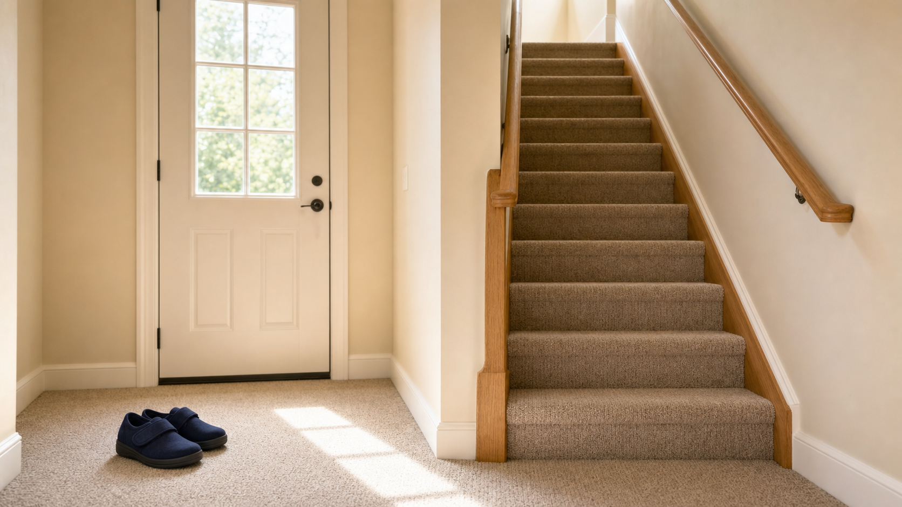
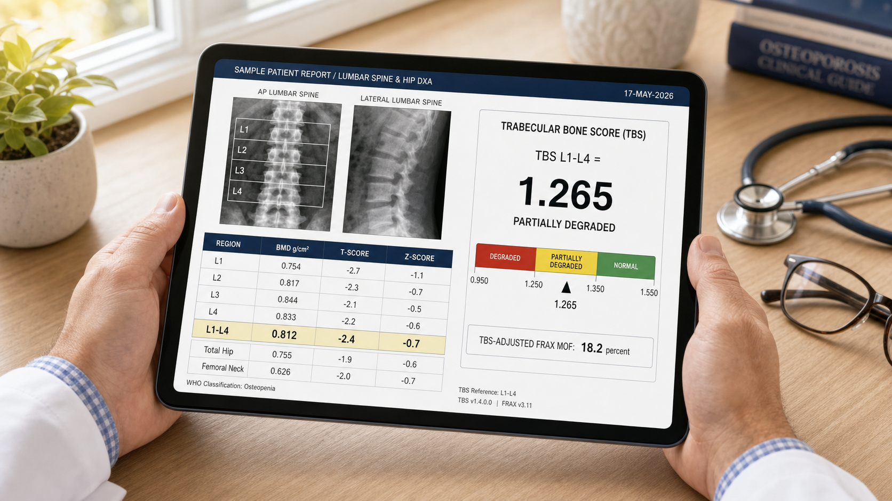
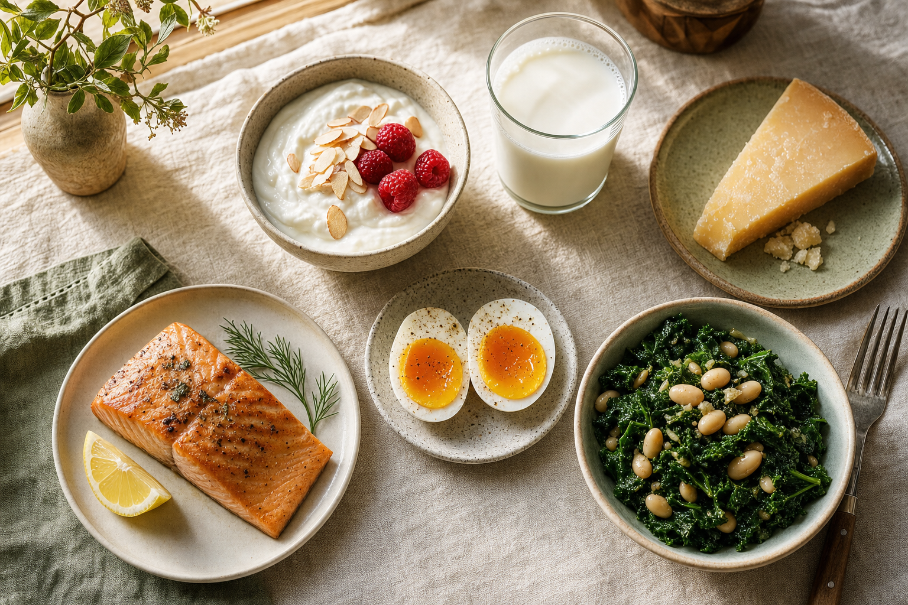
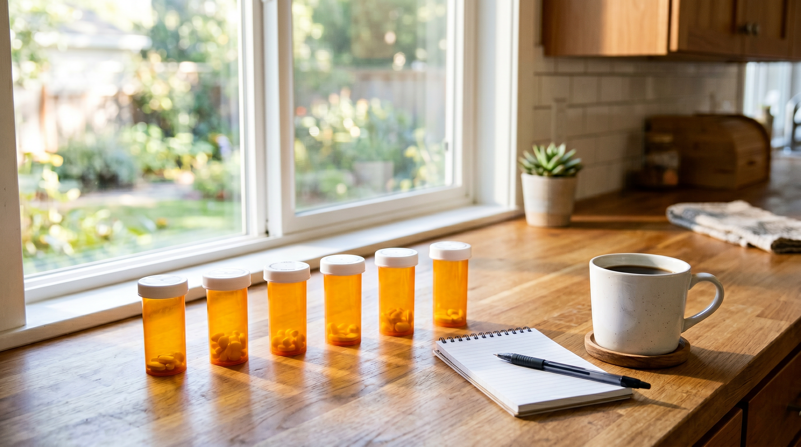
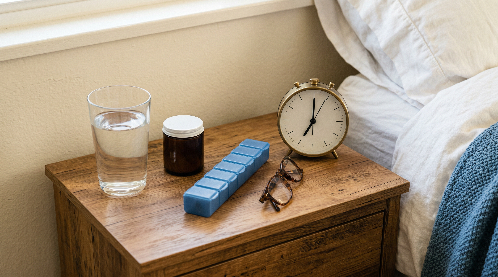
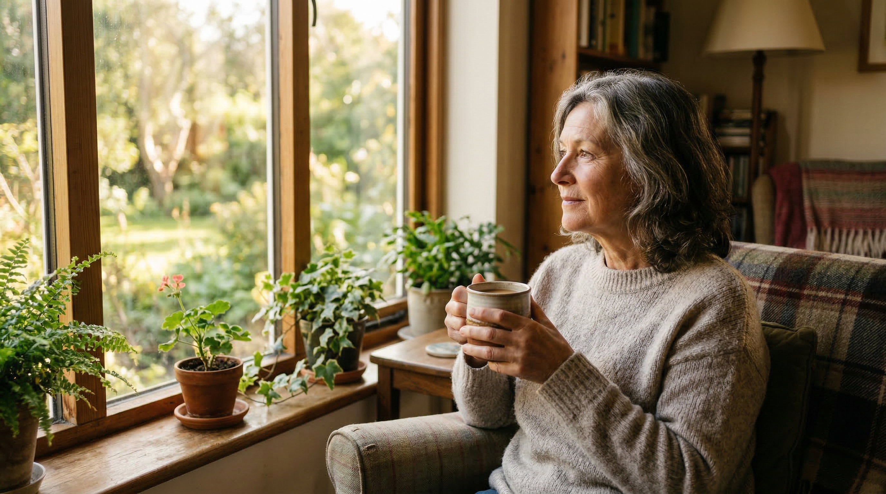
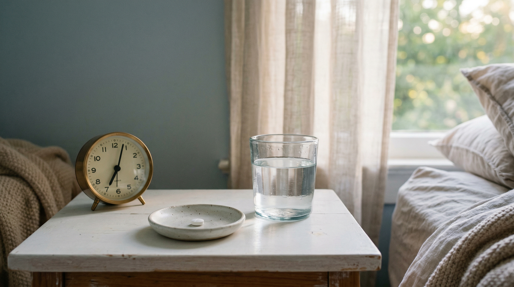
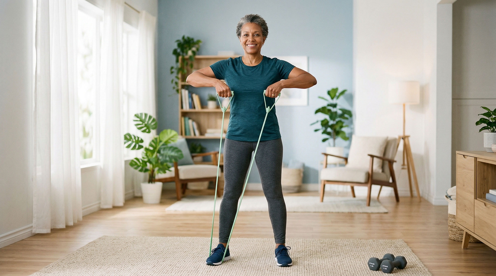
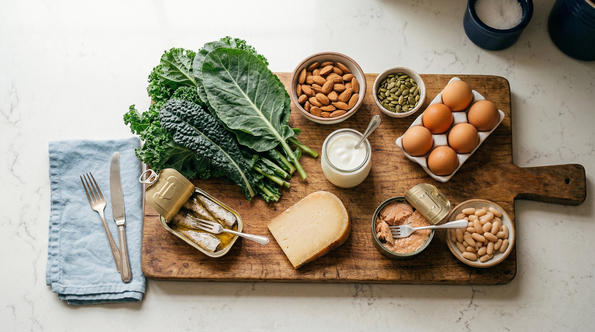

Articles on nutrition, exercise, medication, and living well with osteoporosis

Fall prevention isn't a senior topic. A whole-house guide to flooring, footwear, bathrooms, outdoor spaces, and the home-design choices that protect your future self.

Modern DEXA reports include more than T-scores. What Trabecular Bone Score and Vertebral Fracture Assessment add, when they change a treatment decision, and what to ask your doctor.

Why protein, calcium, vitamin D, magnesium and vitamin K work together for bone health, plus realistic daily targets and how to hit them with food.
Read More →How sclerostin-blocking sets Evenity apart from other anabolics, the 12-month cap, the cardiovascular boxed warning, and why the follow-up matters.
Read More →Two daily anabolic injections that actively build new bone, the recent change to the 2-year limit, and why the follow-up medication matters.
Read More →
Which common prescriptions raise your chances of falling, and how to have a focused medication review with your doctor.
Read More →
Practical advice for making bisphosphonate therapy work in your daily life.
Read More →Quick, delicious meals packed with calcium, vitamin D, magnesium, and protein. Includes vegetarian and vegan options.
Read More →
The identity crisis nobody warns you about, and how to rebuild a sense of self that is stronger than the diagnosis.
Read More →Why falls are the real danger, and how simple daily habits can dramatically reduce your risk.
Read More →
How bisphosphonates work, common fears vs. actual risks, taking them correctly, and understanding drug holidays.
Read More →
Understanding the difference between these two essential exercise types and how to get started safely.
Read More →
A practical guide to finding calcium, vitamin D, K2, magnesium, and protein at your regular grocery store.
Read More →